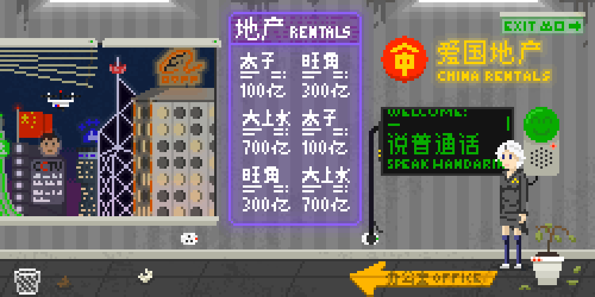

PHOTOSENSITIVITY WARNING: some graphics may flash at a high frequency.
I live(d) in Hong Kong, a former British colony and a Special Administrative Region of China. Since the central government’s refusal to offer any concessions on political reform after the Umbrella Revolution of 2014, things seem to be sliding downhill faster and faster. Missing booksellers, legislators disqualified and arrested at the behest of China (and as of 2018, even more disqualifications and bans [and as of 2020… well, you know]), and apathy about the very idea of protesting give very few people hope for Hong Kong beyond 2047, when the protections on our ‘capitalist way of life’ run out.
I may be naïve, but I believe there is yet hope for Hong Kong. How to give others hope, is still something I’m working on.
This is more of an interactive museum looking into one possible future of Hong Kong than a true game. From the start, I wanted to describe some current (as of 2017) trends while simultaneously bringing them to absurd conclusions in the year 2048.
END TRANSMISSION